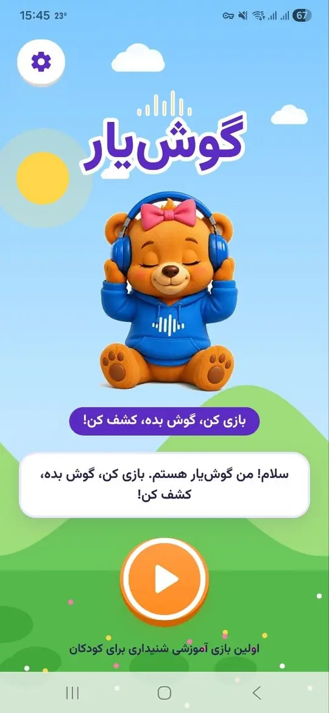

۳ تا ۸ سال
گوشیار
بازی صداها؛ تمرین شنیدن و تمرکز
کودک صدای حیوانها، وسایل خانه، طبیعت و موسیقی را میشنود، حدس میزند و ماموریتهای شنیداری را یکییکی کامل میکند.
استودیوی بازی و سرگرمی کودک
اپ، بازی و انیمیشن فارسی برای کودکان ۳ تا ۱۰ سال. همهچیز را خودمان میسازیم: شخصیت، صدا، بازی و رابط کاربری.

محصولات ما
هر اپ یک شخصیت و یک هدف دارد؛ از تمرین شنیدن تا درسهای سوم دبستان.
بازی صداها؛ تمرین شنیدن و تمرکز
کودک صدای حیوانها، وسایل خانه، طبیعت و موسیقی را میشنود، حدس میزند و ماموریتهای شنیداری را یکییکی کامل میکند.
نقاشیات روی کاغذ، جان میگیرد
روی کاغذ واقعی نقاشی بکش، با دوربین اسکن کن و ببین کنار پشمک زنده میشود.
فارسی سوم دبستان با جغد معلم
هر صفحهی کتاب یک درس صوتی دارد؛ با آزمون و کاربرگ در سه سطح.
ریاضی سوم دبستان، بدون استرس
جغد معلم قدمبهقدم توضیح میدهد، بعد نوبت تمرین و آزمون است.
علوم سوم دبستان با جغد معلم
تصویرهای کتاب را زوم کن و درس را از روی همان صفحهها بشنو.
یک باغ تازه میآید
بازی ساختن و کشف با روباه کوچولو.
نمونهی کار
صدایی پخش میشود و کودک باید بین چند تصویر صاحبش را پیدا کند. حیوانها، سازها، وسایل خانه و طبیعت؛ مرحلهبهمرحله و با ماموریت روزانه.
خدمات استودیو
برای برندها، ناشران و مراکز آموزشی هم محتوا، بازی و انیمیشن تولید میکنیم.
از ایده و شخصیت تا انتشار در کافهبازار؛ طراحی بازی، صداگذاری و تست با کودک.
شخصیتهایی که در اپ، ویدیو و شبکههای اجتماعی یک زبان دارند.
تیزر، ریلز و ویدیوی کوتاه برای معرفی محصول یا آموزش.
هماهنگ با کتاب درسی، با تمرین، آزمون و کاربرگ قابل چاپ.
با شما مینشینیم: مخاطب، هدف و محدودهی کار روشن میشود.
جریان کار، شخصیت و رابط کاربری را طراحی و با شما مرور میکنیم.
مرحلهبهمرحله میسازیم و هر نسخه را میبینید.
فایل نهایی، انتشار و پشتیبانی بعد از تحویل.
تعهد ما به والدین
اپ کودک فقط سرگرمی نیست؛ جایی است که کودک تنها میماند. این چهار اصل در همهی اپهای ما ثابت است.
بلاگ
چکلیست ساده برای والدین: ردهی سنی، تبلیغات، قفل والدین، دسترسیها و خرید درونبرنامهای؛ قبل از نصب هر اپ برای کودک.
خلاصهی رهنمود سازمان جهانی بهداشت دربارهی صفحهنمایش کودکان زیر ۵ سال، و چند راه ساده برای اینکه گوشی جای بازی و حرکت را نگیرد.
پنج بازی بدون وسیله برای تمرین شنیدن و تمرکز کودک: حدس صدا، ترتیب صداها، ریتم و صدای مخفی. مناسب ۳ تا ۸ سال.
همهی اپهای ما در کافهبازار هستند. خبر اپهای تازه و پشتصحنهی ساخت را در اینستاگرام میگذاریم.